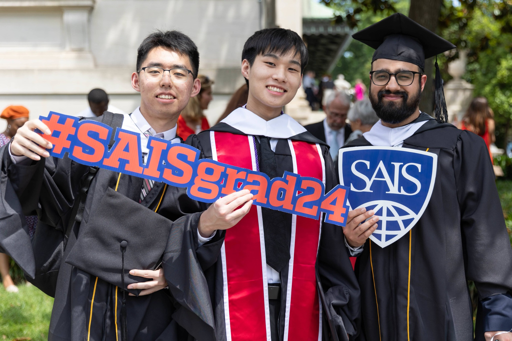
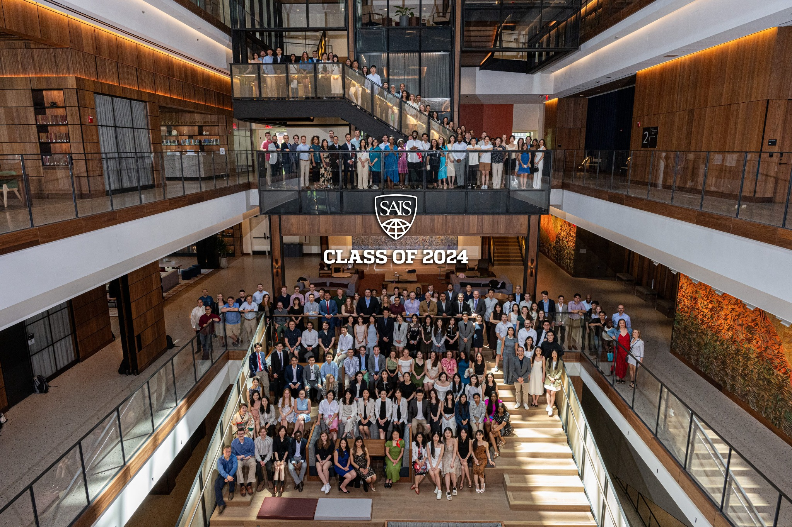

Profile First
Your academic background, experience, interests and aspirations shape the strategy.
Personalised guidance for study abroad, academic growth and career decisions.
We help students and young professionals understand their options, evaluate their profiles and build practical pathways towards their academic and professional goals, in India and abroad.
Start
Choosing a university, degree or career path is a major investment.
BridgeMinds Lab helps you evaluate your options based on your profile, aspirations, academic interests, finances and long-term career goals.
Our goal is simple: help you make a better informed decision before you commit time, money and effort.
Your academic background, experience, interests and aspirations shape the strategy.
Understand opportunities, trade-offs, costs and realistic outcomes before you commit.
The goal is not simply an admission offer. It is a pathway that makes sense for your future.
Whether you are just beginning to explore your options or preparing a competitive application, our guidance adapts to where you are in your journey.
Exploring universities, countries and academic pathways.
Choosing programmes that align with academic and career goals.
Developing research positioning and identifying suitable opportunities.
Considering further study, international opportunities or career transitions.
Unsure which academic or professional direction fits them best.

Start with clarity. Build your profile. Apply with confidence.
For students who need clarity.
A structured assessment to understand strengths, interests, work style and academic direction.
₹1,000A focused review of your CV for international academic applications.
₹1,999A personalised consultation to understand countries, programmes, costs, scholarships, timelines and your next steps.
₹3,999 · 2 sessionsFor students preparing their profile.
Deep profile assessment, gap identification and a personalised preparation roadmap.
Support with CVs, LinkedIn, research topics, fellowships, portfolios, thesis guidance and data analysis.
SOPs, CVs, LOR strategy, additional essays and motivation letters.
For students ready to apply.
Programme selection, research positioning, supervisor outreach and scholarship strategy.
End-to-end support throughout the admissions process, from strategy through application execution.
₹30,000 · overall process, not per university
BridgeMinds Lab does not receive university commissions for student admissions. Our recommendations are based on your profile, goals and fit, not on commission incentives.
We learn about your academic background, goals, interests, finances and aspirations.
We assess your profile, strengths, gaps and realistic opportunities.
We identify programmes, destinations, timelines and funding possibilities.
We help turn the strategy into a stronger and more authentic application.

It is a community, a network, a set of experiences and a direction for what comes next.
NOT SURE WHERE TO START?
Tell us about your plans and we'll help you understand what kind of guidance would be most useful.
Request a consultation ↗